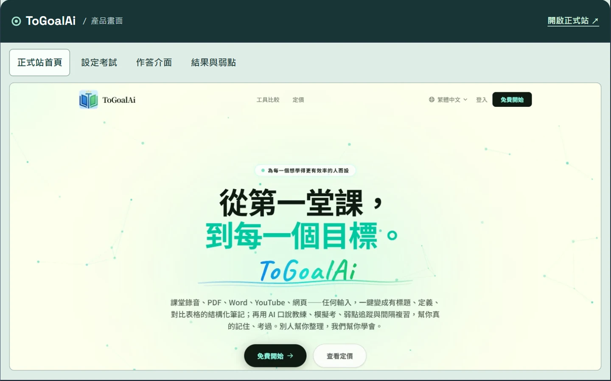
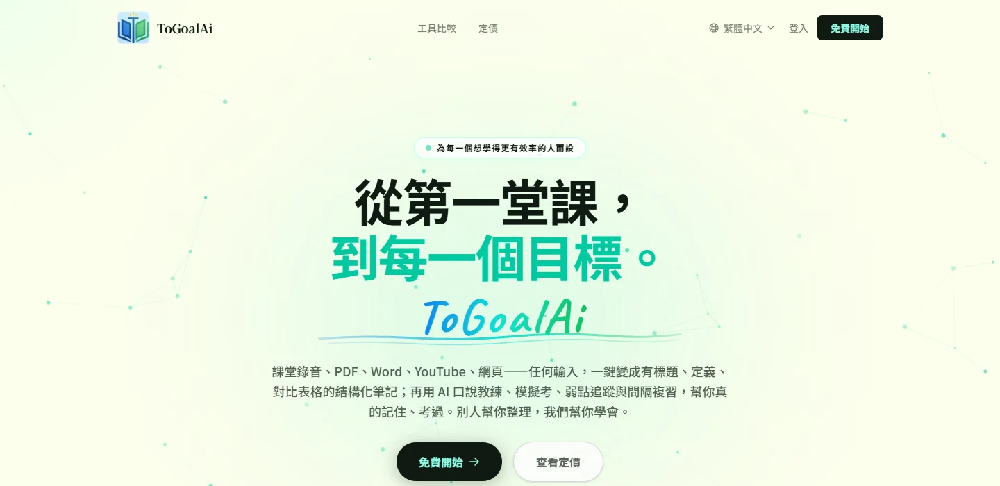

← 全部作品／ 產品開發



交付成果獨立開發，已上線
ENGINEERING NOTES
我怎樣做
這是我自大學開始獨立開發的客製化學習工作區。使用者可先修訂簡報大綱，再逐頁修改組件。
匯入教材
按檔案類型處理文件、錄音和網頁；Supadata 取得影片逐字稿。
建立問答
按帳戶和用戶選定的教材取段落，答案保留出處。超出上下文預算才呼叫壓縮模型。
完成交付
由 UI、登入、訂閱到可修改的簡報和 PPTX 輸出，透過 GitHub 管理版本、Vercel 部署。
- Next.js
- TypeScript
- Supabase
- RAG
INTERACTIVE
親手試用

正式站首頁。可切換至設定考試、作答及成績畫面。
教材處理路徑
- 輸入
- 文字 PDF 或掃描件
- 匯入處理
- unpdf 先取文字層。缺少有效文字時，交 Gemini 直接讀 PDF。
- 共用資料
- Supabase 儲存教材與筆記段落，供問答、出題及複習讀取。
技術與取捨
- 前端與 UI
- 由零建立 Next.js 教材工作區。簡報流程分步收集需求，用戶可修改大綱及投影片，再以 PptxGenJS 匯出。
- 後端與 API
- 設計教材匯入、出題及問答 API。Supabase 管理登入和教材資料，整合 Google 登入及 Stripe 訂閱。
- RAG 與成本
- 問答從選定教材取段落，讓回答附上來源。先估算上下文長度，超出模型預算才額外呼叫壓縮模型。合適的繁中問答會重用有效的教材快取。
- 部署與交付
- 獨立完成架構、程式和介面，以 GitHub 管理版本並部署到 Vercel。正式站支援問答、模擬試、口試及可編輯簡報。